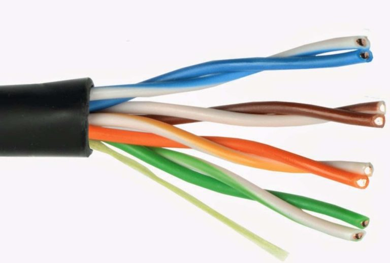
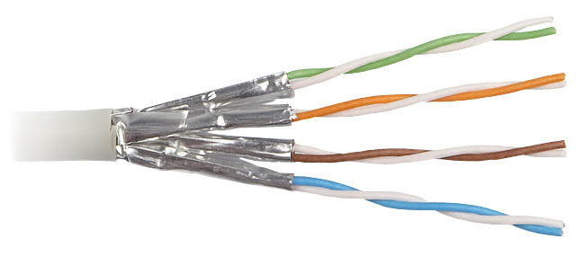

PERBEDAAN DASAR KABEL UTP DAN STP
Assalamualaikum wr.wb. Hallo kawan-kawan sekalian apa kabar, Semoga kawan-kawan sekalian selalu sehat dan dalam lindungan Allah Swt amiinn ya robbal alamin.
Oke, balik lagi bersama saya Adly Ansari NasutioN. Kali ini saya akan men – share sedikit Materi Tentang PERBEDAAN DASAR KABEL UTP DAN STP.
Dari pada kawan-kawan menunggu terlalu lama, langsung saja simak penjelasan dibawah ini ya kawan-kawan. Nah itulah Sedikit materi tentang PERBEDAAN DASAR KABEL UTP DAN STP, kurang lebih nya saya mohon maaf. Jika kawan-kawan ingin berikan pendapat atau komentar , silahkan tulis komentar serta pendapat kawan-kawan dikolom komentar dibawah ini. dan saya akhiri dengan Wassalamualiakum Wr.wb.
Info lebih lanjut:
Hubungi Saya
1.KABEL UTP

2.KABEL STP
